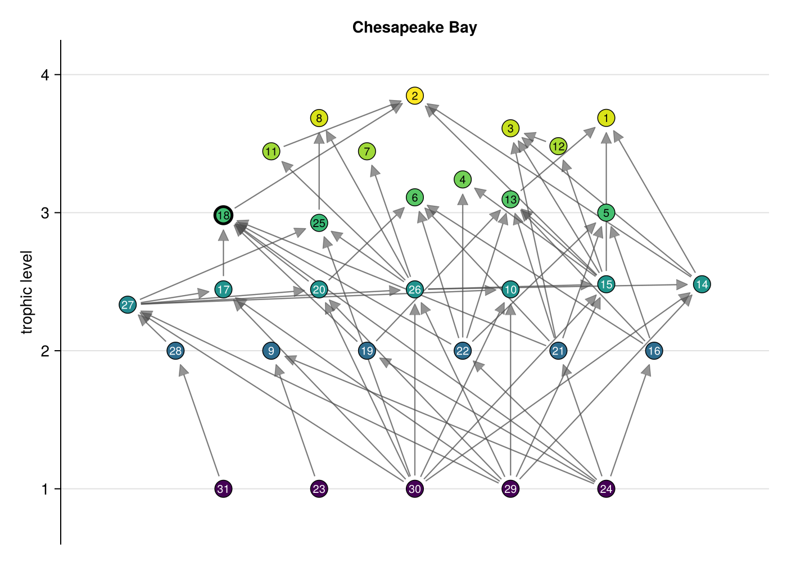
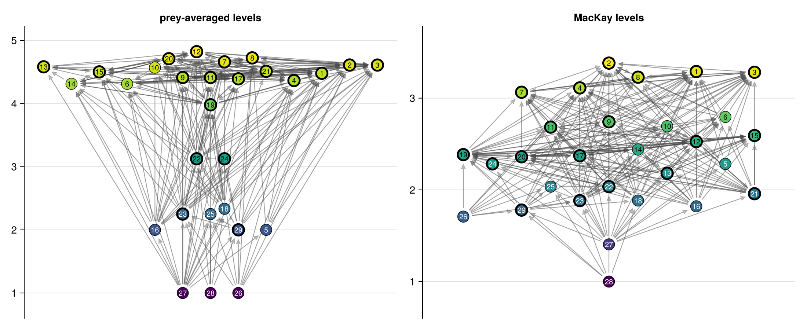

Plotting
trophic_layout places each species at the height of its trophic level and orders the species across each band of levels to reduce edge crossings. With a Makie backend loaded, foodwebplot draws a web from that layout, with arrows from prey to predator, and eigenplot draws the eigenvalues of a matrix with its elliptic-law prediction.
using FoodWebs, CairoMakie
fw = foodweb("williams_martinez_2000/chesapeake_bay")
fig, ax = foodwebplot(fw; size = (700, 500), title = fw.name)
fig
Any trophic levels can set the heights. The MacKay levels show where a loopy, omnivorous web mixes its levels:
fw = foodweb("williams_martinez_2000/coachella_valley")
fig = Figure(size = (1100, 450))
foodwebplot!(Axis(fig[1, 1]; title = "prey-averaged levels"), fw)
foodwebplot!(Axis(fig[1, 2]; title = "MacKay levels"), fw; levels = trophic_levels(fw; method = :mackay))
fig
Node size, edge opacity and arrowhead size scale with the size of the web, and labels are left out above 60 species; each can be set by keyword. The repository's gallery/ holds Quarto notes drawing every bundled web and the random-matrix reference cases (just gallery).
FoodWebs.trophic_layout — Function
trophic_layout(web; levels = trophic_levels(web), band = 0.3, sweeps = 20, groups = nothing)Positions (x, y) for drawing web, where web[i, j] != 0 means species j eats species i. y is the trophic level levels[i]; prey-averaged levels by default, or any vector of levels.
Species are grouped into bands of levels at most band apart: going up the levels, a species starts a new band when its level is more than band above the lowest level in the current band. Measuring from the band's lowest species keeps bands short for continuous levels such as the MacKay levels, where chaining each species to the next would merge most of the web into one band. Each band is spread evenly across x, centred on zero with unit spacing, and shifted by half a unit when it lies within band of the band below and would otherwise put nodes at the same x. The order within each band comes from the barycenter heuristic: sweeps passes, alternately up and down the bands, each ordering a band by the mean x of every species' prey and predators in other bands, keeping the ordering with the fewest edge crossings (FoodWebs.edge_crossings). The starting order is the order of the species in web, so the layout is deterministic, and sweeps = 0 keeps it.
With groups, a partition of the species such as the compartments from compartments, each band is ordered by group first, groups placed by the mean x of their members, and by the barycenter within each group, so that compartments line up as vertical channels across the bands.
FoodWebs.edge_crossings — Function
edge_crossings(web, positions)The number of pairs of links of web whose straight segments between positions cross, not counting pairs that share a species or cannibalistic links.
FoodWebs.foodwebplot — Function
foodwebplot(web; kwargs...)
foodwebplot!(ax, web; kwargs...)Draw web with each species at the height of its trophic level and arrows from prey to predator (trophic_layout). Requires Makie: load a Makie backend such as CairoMakie to enable it. foodwebplot returns the figure and axis; foodwebplot! draws into an existing axis.
Keywords:
levelsandlayout: the trophic levels and node positions (by default fromtrophic_levelsandtrophic_layout);color: node colours, one per species or a single colour (by default by trophic level), withcolormap;markersize: one per species or a single size (by default shrinking from 22 asSgrows past 30);edgecolor,edgealpha,edgewidthandtipsize: for the arrows (by default the opacity and arrowhead size fall as the number of links grows, so dense webs stay legible). Arrows stop at the node edges in screen space, so they meet the nodes whatever the aspect ratio;labelsandfontsize: text drawn on each node (nothingfor none; by default the species indices for webs of up to 60 species and none for larger ones) and its size. Labels are white on dark nodes and black on light ones;highlight_cannibals: draw cannibals with a thick outline (defaulttrue);groups: a partition of the species, such as the compartments fromcompartments: nodes are coloured by group frompalette(by defaultMakie.wong_colors(), cycling when there are more groups than colours), groups of one species in grey, species of a group are kept together in the layout (trophic_layoutwithgroups), and links between groups are drawn inbetweencolor(default:firebrick) and more opaque, so the coupling links stand out;show_within = falsehides the links within groups;roles: one role per species, such asspecies_roles(web, groups).role, drawn as marker shapes: circles for peripheral species, diamonds for connectors, squares for module hubs and stars for network hubs;legend(foodwebplotonly): a legend of the groups and roles, shown by default when either is given.
FoodWebs.foodwebplot! — Function
foodwebplot!(ax, web; kwargs...)Draw web into the Makie axis ax; see foodwebplot for the keywords.
FoodWebs.eigenplot — Function
eigenplot(M; size = (500, 500), title = "", kwargs...)
eigenplot!(ax, M; kwargs...)Plot the eigenvalues of the square matrix M in the complex plane, optionally with the elliptic_law prediction. Requires Makie: load a Makie backend such as CairoMakie to enable it. eigenplot returns the figure and axis; eigenplot! draws into an existing axis and returns the axis.
Keywords:
ellipse: draw the elliptic-law ellipse estimated from the off-diagonal pairs ofM(defaulttrue);outlier: mark the predicted outlier from a nonzero mean, when there is one (defaulttrue);stability: draw the stability boundaryRe λ = 0(defaulttrue);law: theEllipticLawto draw, by defaultelliptic_law(M);groups: a partition of the species; the bulk and outliers drawn are then those ofblock_spectrum(M, groups)in place of the elliptic law;expected: a matrix whose eigenvalues to mark as crosses, such as theexpected_community_matrixof a structured web, whose eigenvalues give the imaginary spread of the spectrum (defaultnothing), withexpectedcolor;color,markersize: for the eigenvalues;ellipsecolor,outliercolor: for the prediction;equal_aspect: show a square window with equal scales on both axes, so the ellipse keeps its shape (defaulttrue); withfalseMakie fits each axis to the data.
FoodWebs.eigenplot! — Function
eigenplot!(ax, M; kwargs...)Draw the eigenvalues of M into the Makie axis ax; see eigenplot for the keywords.